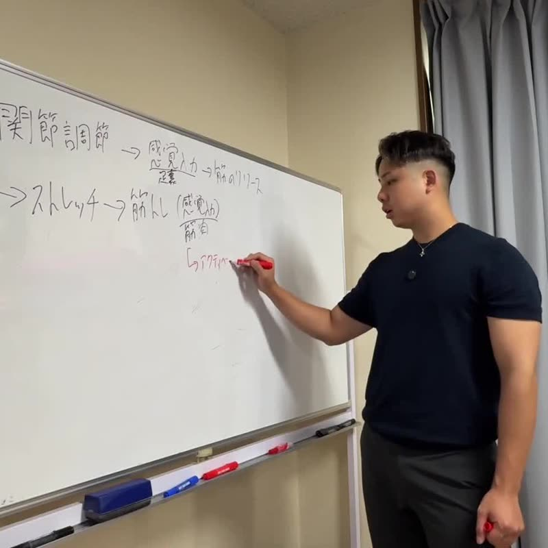
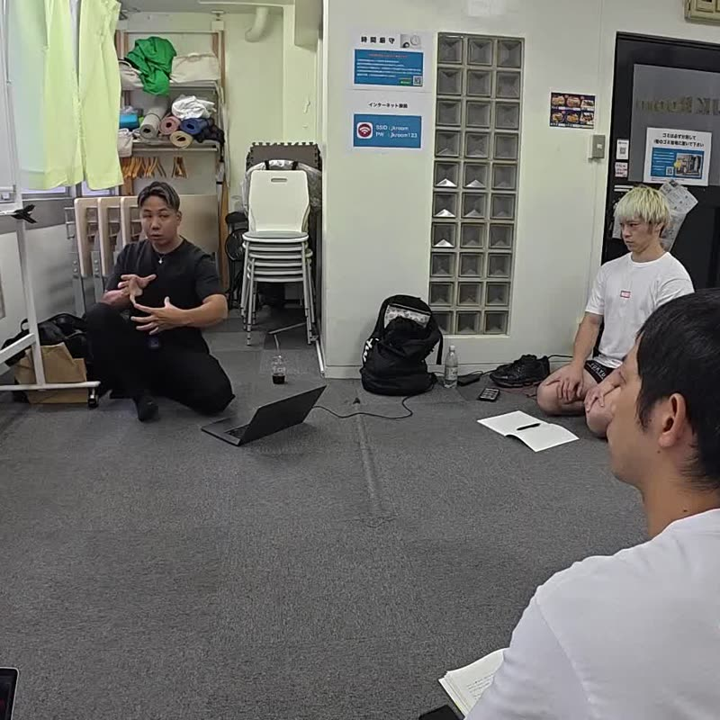

01 — About
現場の技術を、
伝えられる形に。

現場で積み重ねた技術は、その人の手の中だけにあると、次の人へは渡りません。
コンディショニングジャパン協会は、創設者・原口慶篤がパーソナルトレーナー兼整体師として12年以上の現場で培い、「零式」として体系化してきた技術を、学び、実践し、次の人へ伝えられる形に整えるための協会です。
身体のどこを、どう評価し、何をして、変化をどう確かめるのか。その手順を言葉と実技で共有し、教えられる人を育てていきます。
設立の背景と理念


03 — Method
技術教育で大切にしていること
部分だけを見ず、全体の関係を考える。
やったことの結果を、その場で確かめる。

- Assess
評価
姿勢・動き・触診などから、いま身体で何が起きているかを捉えます。
- Intervene
介入
評価にもとづいて、手技やストレッチ、運動の中から手段を選びます。
- Re-assess
再評価
同じ基準で見直し、変化があったか、なかったかを確かめます。
- Movement
動作・運動へ
施術で終わらず、日常の動作や運動へつなげる流れを組み立てます。
変化がなければ評価に戻り、考え直す。この往復を学びの中心に置いています。
04 — Courses
12の講座で、
身体を順に学ぶ。
手や足の基礎から、頭部、姿勢、経絡ストレッチ、関節、ボディメイク、内臓へのアプローチ、全身の施術設計まで。創設者が開発してきた「零式」の講座です。
2027年の年間セミナーとして開催が予定されています。日程・受付状況は各講座ページでご確認ください。
零式 2027 年間セミナー
12の講座は、2027年の年間セミナーとして開催が予定されています。日程はすべて予定です。料金・会場・定員・受付状況は各講座のページでご確認ください。
 01零式-ハンドベースコンディショニング2027年1月16日（土）東京｜対面＋オンライン・1日（外部サイト）
01零式-ハンドベースコンディショニング2027年1月16日（土）東京｜対面＋オンライン・1日（外部サイト）- 02零式-ヘッドコンディショニング極2027年2月20日（土）・21日（日）東京｜対面・2日間（実技あり）（外部サイト）
- 03零式-フットベースコンディショニング2027年3月13日（土）東京｜対面・1日（実技あり）（外部サイト）
- 04零式-美姿勢コンディショニング2027年4月17日（土）・18日（日）東京｜対面・2日間（実技あり）（外部サイト）
 05零式-経絡ストレッチ2027年5月29日（土）・30日（日）東京｜対面・2日間（外部サイト）
05零式-経絡ストレッチ2027年5月29日（土）・30日（日）東京｜対面・2日間（外部サイト） 06零式-美脚美尻コンディショニング2027年6月19日（土）東京｜対面・1日（実技あり）（外部サイト）
06零式-美脚美尻コンディショニング2027年6月19日（土）東京｜対面・1日（実技あり）（外部サイト） 07零式-ボディメイク・コンディショニング合宿2027年7月17日（土）〜19日（月・祝）高知｜合宿・3日間（外部サイト）
07零式-ボディメイク・コンディショニング合宿2027年7月17日（土）〜19日（月・祝）高知｜合宿・3日間（外部サイト） 08零式-内臓調整 ― 神経アプローチ2027年8月21日（土）・22日（日）東京｜対面・2日間（実技あり）（外部サイト）
08零式-内臓調整 ― 神経アプローチ2027年8月21日（土）・22日（日）東京｜対面・2日間（実技あり）（外部サイト） 09零式-関節調整法 BASIC2027年9月18日（土）・19日（日）東京｜対面・2日間（外部サイト）
09零式-関節調整法 BASIC2027年9月18日（土）・19日（日）東京｜対面・2日間（外部サイト）- 10零式-関節調整法 ADVANCE2027年10月9日（土）・10日（日）東京｜対面・2日間（外部サイト）
 11零式-ウーマンエイジング・コンディショニング2027年11月13日（土）東京｜対面・1日（実技あり）（外部サイト）
11零式-ウーマンエイジング・コンディショニング2027年11月13日（土）東京｜対面・1日（実技あり）（外部サイト） 12零式-ZERO RECOVERY 第2期2027年12月11日（土）・12日（日）東京｜対面・2日間（外部サイト）
12零式-ZERO RECOVERY 第2期2027年12月11日（土）・12日（日）東京｜対面・2日間（外部サイト）


過去のセミナーの様子
協会の考え方
実践できることと、
教えられることは、
別の力である。




05 — Certification
教えられる人を、
一人ずつ育てる。
自分で施術ができることと、他の人に教えられることは、別の力です。認定講師制度は、技術を実践し、説明し、受講生の習得を支えられる講師を育てるための仕組みとして準備を進めています。
構想では、1つのコンテンツにつき認定講師は最大10人までとしています。
受講条件・認定の方法・費用などは決定後にご案内します。

06 — Founder
創設者
原口 慶篤
はらぐち のりあつ（のりお）
パーソナルトレーナー兼整体師として12年以上、施術、運動指導、ボディメイク、姿勢改善に携わってきました。TOTAL BODY FITNESS THEORY、零-ZERO-、零式の名称で、専門家向けのセミナーや企業研修、技術教育を行っています。
解剖学・生理学・神経系・運動の視点と、関節調整、オステオパシー、経絡、頭部・内臓へのアプローチを組み合わせ、これまでに12のコンテンツを開発しました。
創設者紹介を読む


Contact
ご相談・お問い合わせ
講座について、認定講師制度について、企業研修・登壇・提携について。目的に合わせた窓口をご案内しています。